Navigation Menu
1. Installation
You need to configure some details in order to install your forum but there are some requirements
Requirements:
- Apache/Nginx
- MySQL Server
- PHP Version >=5.4
- Rewrite Module
- PHP Mcrypt Exension
- Composer (Optional)
1. Extract forum files in your www/htdocs folder.
2. Open file "conf.php" in the main forum folde.

3. You will see this

4. You need to configure MySQL database name and username/password. SMTP username/password. Facebook AppId and Secret key.
$conf_site_url - the url of your forum script. For example: http://forumiumpro.tk. !!!YOU NEED TO REDIRECT THE DOMAIN TO THE "PUBLIC" FOLDER. THE "PUBLIC" FOLDER IS THE FOLDER WHERE ALL USERS NEED TO GO"
$db_host - this usually is localhost but if it is not you can enter teh address of the host.
$db_username - the username of MySQL user who HAS ALL PERMISSIONS (TO EDIT/DELETE/CREATE ETC.)
$db_password - the password of the MySQL user
$db_name - the name of the MySQL database !!!THE DATABASE MUST BE EMPTY!!!
$smtp_host - if you have smtp server you can enter its address but you can also leave it smtp.gmail.com.
$smtp_username - the username of your smtp server. If it is smtp.gmail.com you need to write YOUR GMAIL ACCOUNT EMAIL.
$smtp_password - the password of your smtp server user. If it is smtp.gmail.com you need to write YOUR GMAIL ACCOUNT PASSWORD.
$smtp_port - 587 is the default but you can change it.
$conf_site_url - the url of your forum script. For example: http://forumiumpro.tk. !!!YOU NEED TO REDIRECT THE DOMAIN TO THE "PUBLIC" FOLDER. THE "PUBLIC" FOLDER IS THE FOLDER WHERE ALL USERS NEED TO GO"
$db_host - this usually is localhost but if it is not you can enter teh address of the host.
$db_username - the username of MySQL user who HAS ALL PERMISSIONS (TO EDIT/DELETE/CREATE ETC.)
$db_password - the password of the MySQL user
$db_name - the name of the MySQL database !!!THE DATABASE MUST BE EMPTY!!!
$smtp_host - if you have smtp server you can enter its address but you can also leave it smtp.gmail.com.
$smtp_username - the username of your smtp server. If it is smtp.gmail.com you need to write YOUR GMAIL ACCOUNT EMAIL.
$smtp_password - the password of your smtp server user. If it is smtp.gmail.com you need to write YOUR GMAIL ACCOUNT PASSWORD.
$smtp_port - 587 is the default but you can change it.
Facebook Login Configuration
You need to configure your facebook app's appId and facebook app's secret key. In order to do that you must create app in http://developers.facebook.com/
Creating a Facebook App.

Now you need to click on "Apps" in the top-left corner and then click "Create a New App"


In Dispaly Name field enter some name. Ex.:myforumpro
In Namespace field enter something that isn't taken. Ex.:myforumpronamespace. Then choose category and click "Create App". Then reload the page and click "Apps" and then click on your app.
In Namespace field enter something that isn't taken. Ex.:myforumpronamespace. Then choose category and click "Create App". Then reload the page and click "Apps" and then click on your app.


Click on settings in the left and then click "Add Platform".


Choose Website


In Site URL field enter the url of the forum. For example: http://forumiumpro.tk/ and in Mobile Site URL enter the same url and then click "Save Changes".

In App Domains fieldenter again your forum site url and in Contact Email field enter your contact email and click again "Save Changes". Then go to Status & Review and turn your application to public.


Then go to "Dashboard" and copy the APP ID and App Secret and enter them in "conf.php" in the main forum folder.


Creating the database tables and inserting rows
Now you need to create db tables in your database and insert some data in them. In order to do that you need to open the terminal and navigate to your main forum folder. If your are using windows you click SHIFT+RIGHT MOUSE CLICK and then choose "Open command window here" or if you are using linux you can navigate to the folder in terminal using the command "cd"

Now you need to type "php artisan migrate", it will ask you "Do you really wish to run this command?" and you need to press ENTER.


After you are done with "php artisan migrate" you need to type "php artisan db:seed", it will ask you "Do you really wish to run this command?" and you need to press ENTER.
 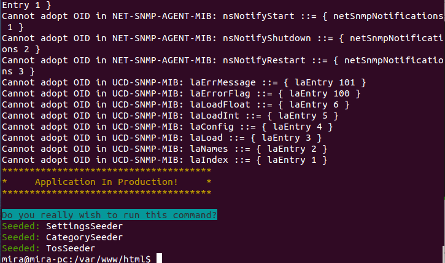
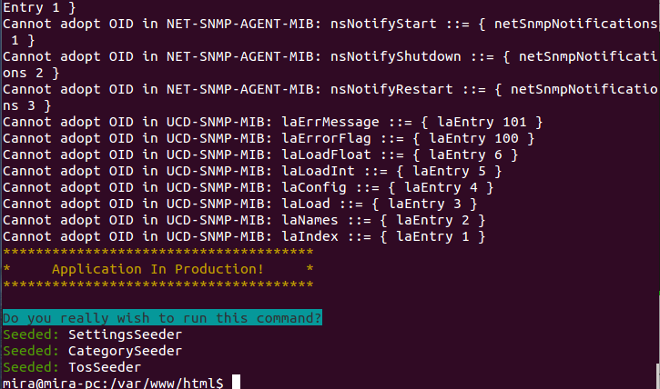
After you are done with "php artisan db:seed" you need to type "php artisan key:generate", it will ask you "Do you really wish to run this command?" and you need to press ENTER.
 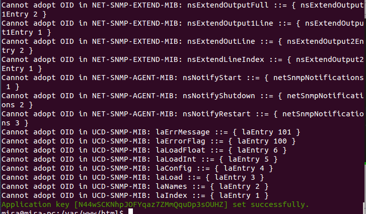
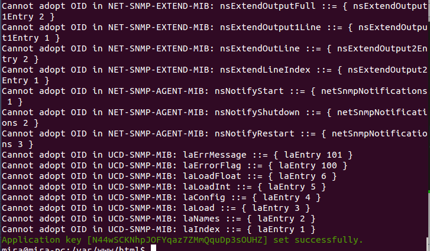
DONE. The forum is ready. Open browser go to localhost and navigate to your forum folder and then go to public folder. THE "PUBLIC" FOLDER IS THE FOLDER WHERE YOU CAN SEE THE FORUM THIS IS THE FOLDER WHERE USERS NEED TO BE REDIRECTED.

 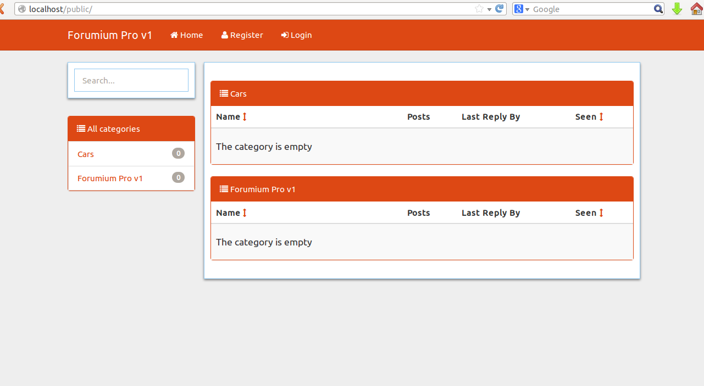
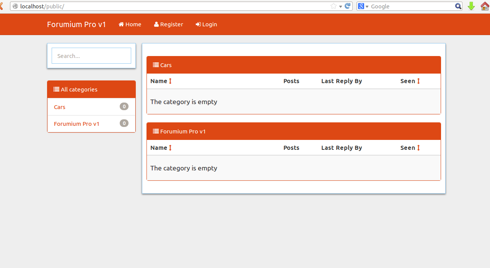
Translation
Forumiumpro can be translated in different langauges. All you need to do is to create folder in "app/lang" folder with the language name for example: IT/ES/RO/CH. !!! Do not change the name of "en" folder in app/lang folder.!!! Then you need to copy all of the files in "en" folder and paste it in the other langauge folder for example "it". Then you need to open then and edit the words.


Navigate to your main script folder -> app -> lang
Create folder with the language you want. For example: "it" (Italian)
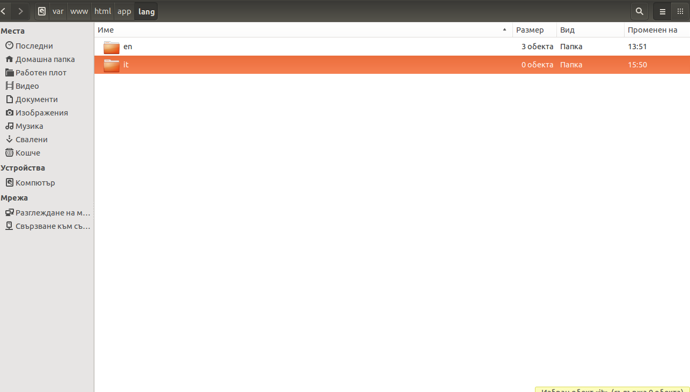
Then copy all the files from "en" folder to the other language folder. In my case "it"
Then open messages.php and you need to change the english words with the words in the langauge you want. 'constant' => 'word', you need to chnage the WORD not the CONSTANT for example: 'wrong_email/password' => 'Wrong Email or Password', you need to change "WRONG EMAIL OR PASSWORD NOT WRONG_EMAIL/PASSWORD". Change all the words in the three files and that's all :). When you open your forum you will see "Language" dropdown in the right corner showing the 2 langauges.
DONE. YOUR FORUM NOW HAS 2 LANGUAGES. YOU CAN HAVE AS MANY LANGUAGES AS YOU WANT
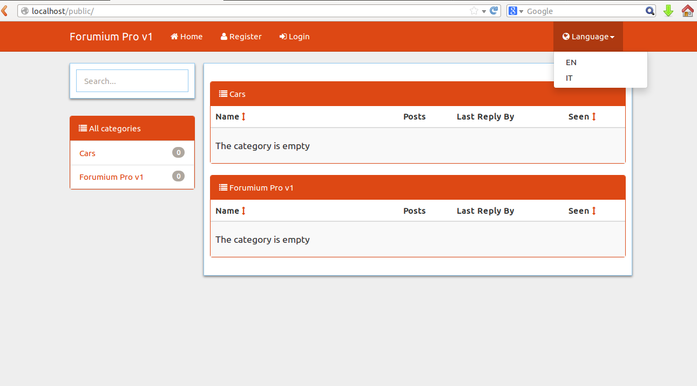
Start Guide
Registration
You can create account easily. You need just to fill small registration form. All fields are required.
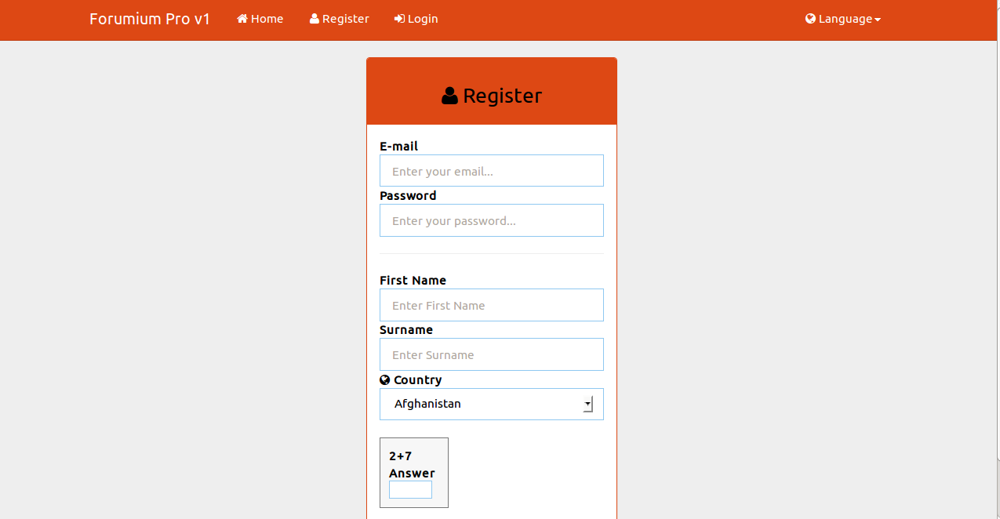
Login
You can login using your facebook account or using the normal login. If you want to login using facebook you need just to click on the "Facebook" button and it will create an account for you automatically. Or you need to enter your email and password and click "Login".

After you login you can see your first name on the navigation menu. Click on it and then click "Profile"


Now you need to complete your profile. You need to describe yourself, write the town where you live and your job. You can make it public (For all users) or for your friends only.
When you describe yourself click "Update" then you need to enter you town and click "Update" and then your job and again click "Update". From "My Settings" you can change these details.
When you describe yourself click "Update" then you need to enter you town and click "Update" and then your job and again click "Update". From "My Settings" you can change these details.
Other's profile
You can send message to others as well as you can add them into your friend list. If they accept your request you can see their description, job and city where they live.

You can send messages to other users. You can view your received/sent messages, you can delete them and restore them from the trash.

Admin Panel
Admin Email: admin@forumiumpro.tk
Password: 123456
!!! IMPORTANT -> CHANGE ADMIN'S PASSWORD AFTER YOU LOGIN IN ADMIN'S ACCOUNT !!!
Password: 123456
!!! IMPORTANT -> CHANGE ADMIN'S PASSWORD AFTER YOU LOGIN IN ADMIN'S ACCOUNT !!!

In the Admin Panel you can manage users, ban/mute users, edit site settings, see all reports, edit tos and change themes.
Basic Settings
You can change the title,keywords,description of the website. These fields are used for better SEO (Search Engine Optimization). You can set the max. profile picture upload size. So if the user uploads picture bigger than this limit it will return an error. You can also enable account activation (When the users register it will receive an email with activation link/code. If the user doesn't activate his account it won't be able to login.). You can also enable/disable Terms Of Service (The user must accept Terms Of Service of the forum in order to register.).

Themes
You can change the theme of the forum easily. Just choose the other theme and click "Update".

Users
Here you can see all registered users. You can delete them or view their profiles or increase/decrease their rank.

Reports
Here you can see all reported posts/discussions.
Reports
Here you can see all reported posts/discussions.
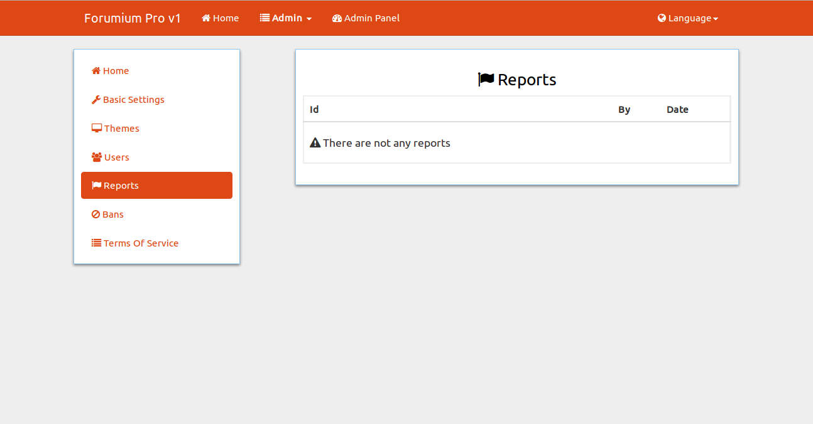
Bans
Here you can see all banned users/ips and unban them.
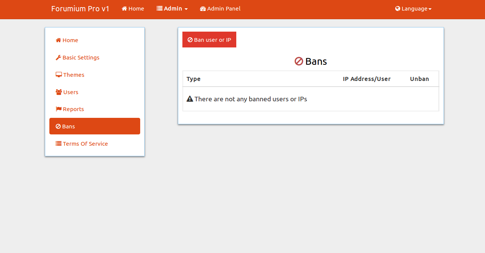
Banning IP/User
You can ban User or IP Address so the user/ip address won't be able to login/register anymore. You need to go to Admin Panel->Bans->Ban user or IP.

You need to choose the type of the ban. User or IP Address. If you select IP Address you need to enter the IP Address you want to ban. If user you need to enter the email of the user. After that you need to enter the ban's length in days. For example 5. The user/Ip Address will be banned for 5 days from the moment of the ban.
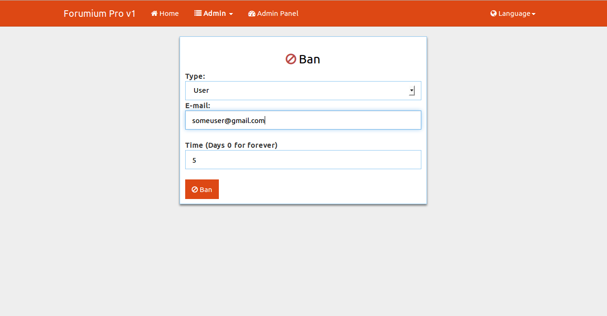

Terms Of Service
Here you need to write the terms of service of the website. When you are ready you need just to click "Update".

Used Libraries
- Bootstrap 3.2.0 - Styling Library
- CKEDITOR - WYSIWYG Editor
- Jquery - Powerful Javascript Library